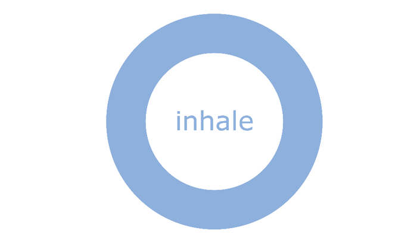
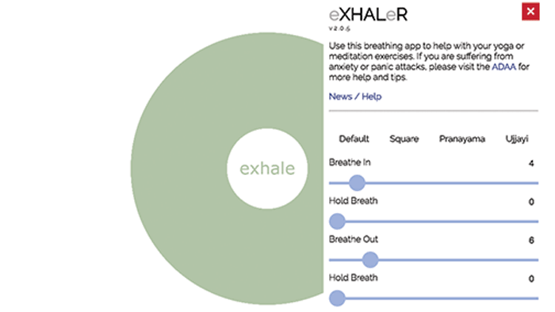

eXHALeR
eXHALeR is a browser application that guides people in breathing exercises.The app is geared towards people practicing yoga or meditation, as well as those suffering anxiety or panic attacks.
Interface Design
The application has a simple design with a color palette of muted blues and purples. Such a palette is evocative of feelings of peace and serenity, which is appropriate for users wishing to relieve anxiety or practice yoga or meditation.
Interaction Design
exHALeR allows users to customize their breathing exercise with different options. It's important to note that the application opens on the breathing application in use, and that these extraneous options are only available when the user choses to open up the options menu on the top right. This indicates that the application keeps those experiencing anxiety in mind, as the number of options may be overwhelming if the application opened with them on the start.
Overall Experience
Overall, eXHALer achieves a great level of effectiveness while its usage and visual style remain simple. The color palette and features compare sharply to the mobile application below, which is a brainwave visualizer rather than a breathing visualizer.